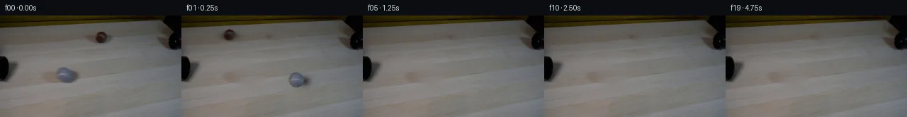

![首帧]()

Round 00
2026-11-05T18:53:51.366904+00:00像素候选变化代码 +238/−0inspection 更新
pixels ace264b151143cfc · code f80a56ea95d621a0
查看本轮 generate.py 真实 diff
--- previous/generate.py
+++ current/generate.py
@@ -0,0 +1,238 @@
+"""Pixel continuation using only the supplied photograph and local numeric operations."""
+from pathlib import Path
+import json
+import math
+import numpy as np
+from PIL import Image, ImageDraw
+from scipy.ndimage import gaussian_filter, map_coordinates
+from scipy.sparse import lil_matrix
+from scipy.sparse.linalg import spsolve
+from scipy.optimize import least_squares
+from artifact_io import save
+
+ROOT = Path(__file__).resolve().parent
+SOURCE = np.asarray(Image.open(ROOT / 'first_frame.png').convert('RGB'), dtype=np.float64)
+H, W = SOURCE.shape[:2]
+Y, X = np.mgrid[:H, :W]
+
+# The mask includes the ball and its broad contact/cast shadow. Background is
+# reconstructed by a horizontally weighted harmonic fill, with small donor
+# grain residuals. This does not introduce a new scene or a new asset.
+REGIONS = [
+ dict(name='grey', cx=90.5, cy=83.8, rx=10.3, ry=10.3,
+ mx=93.0, my=84.5, mrx=25.5, mry=17.0, donor_dx=55, donor_dy=-2,
+ vx=288.0, vy=29.0, decel=24.0),
+ dict(name='brown', cx=143.0, cy=31.0, rx=8.0, ry=8.1,
+ mx=143.5, my=31.5, mrx=21.0, mry=12.5, donor_dx=-44, donor_dy=2,
+ vx=-304.0, vy=-15.0, decel=16.0),
+]
+
+
+def clean_table(image):
+ out = image.copy()
+ reports = []
+ for obj in REGIONS:
+ distance = ((X-obj['mx'])/obj['mrx'])**2 + ((Y-obj['my'])/obj['mry'])**2
+ mask = distance < 1
+ coords = np.argwhere(mask)
+ ids = np.full((H, W), -1, dtype=int)
+ ids[mask] = np.arange(len(coords))
+ matrix = lil_matrix((len(coords), len(coords)), dtype=np.float64)
+ rhs = np.zeros((len(coords), 3))
+ # Horizontal texture dominates this image. A donor's fine grain is
+ # retained through a gradient-domain correction; boundary values
+ # determine the local color/illumination.
+ donor = map_coordinates(image, [np.clip(Y+obj['donor_dy'],0,H-1),
+ np.clip(X+obj['donor_dx'],0,W-1),
+ np.zeros((H,W))], order=1) if False else None
+ donor = np.stack([map_coordinates(image[:,:,c],
+ [Y+obj['donor_dy'], X+obj['donor_dx']], order=1, mode='nearest')
+ for c in range(3)], axis=-1)
+ grain = donor - gaussian_filter(donor, sigma=(1.2, 2.0, 0))
+ grain *= 0.75
+ for k, (y,x) in enumerate(coords):
+ total = 0.0
+ for dy,dx,weight in [(0,-1,1.0),(0,1,1.0),(-1,0,.16),(1,0,.16)]:
+ yy,xx=y+dy,x+dx
+ total += weight
+ rhs[k] += weight * (grain[y,x]-grain[yy,xx])
+ if mask[yy,xx]:
+ matrix[k,ids[yy,xx]] = -weight
+ else:
+ rhs[k] += weight * image[yy,xx]
+ matrix[k,k] = total
+ solution = spsolve(matrix.tocsr(),rhs)
+ out[mask] = solution
+ reports.append(dict(name=obj['name'], filled_pixels=int(mask.sum()),
+ fill_rgb_mean=np.round(solution.mean(0),3).tolist()))
+ return np.clip(out,0,255), reports
+
+BASE_FLOAT, cleanup_reports = clean_table(SOURCE)
+BASE = np.uint8(np.rint(BASE_FLOAT))
+
+
+def fit_shadow(obj):
+ dx=X-obj['cx']; dy=Y-obj['cy']
+ ball_distance=np.sqrt((dx/obj['rx'])**2+(dy/obj['ry'])**2)
+ zone=((X-obj['mx'])/obj['mrx'])**2+((Y-obj['my'])/obj['mry'])**2 < .91
+ valid=zone & (ball_distance>1.16)
+ source_luma=SOURCE.mean(2)
+ base_luma=BASE_FLOAT.mean(2)
+ measured=np.clip(1-source_luma[valid]/np.maximum(base_luma[valid],1),-.05,.8)
+ xx=dx[valid]; yy=dy[valid]
+ # A narrow shadow to the lower right plus a broad, soft penumbra.
+ def evaluate(p,x,y):
+ ox,oy,sx,sy,a,b=p
+ narrow=np.exp(-.5*((x-ox)/sx)**2-.5*((y-oy)/sy)**2)
+ broad=np.exp(-.5*((x-1)/(obj['rx']*1.5))**2-.5*((y-3)/(obj['ry']*.78))**2)
… diff truncated; 151 more lines …